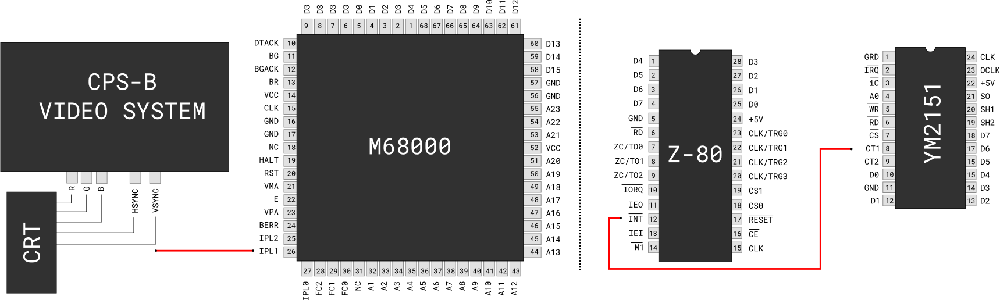

This article is part of a series about Street Fighter II and the CPS-1. It is recommended to read the previous entries before reading this one.
If you are interested in video-games hardware, the arcades of the 80's are the source of endless entertainment. During that decade each game was designed from scratch with a new motherboard featuring various combinations of processors.
Game developers re-invented the wheel until two of them decided to standardize their hardware, propelling themselves ahead of the competition in the process.
SNK came up with the legendary Neo-Geo and Capcom had the CP-System (later known as CPS-1). While I hope someone will write a much deserved technical book about the Neo-Geo, I am focusing on the CPS-1. Today I wanted to talk about its sound system.
As long as you are good with reading C++ and large codebase, the CPS-1 is partially documented in Mame thanks to the thousands of hours unsung heroes dedicated to following bus lines.
Looking at Mame's CPS-1 driver drivers/cps1.cpp on lines 3614 and 6678 gives a good overview of how the machine works.
At the heart we find a Motorola 68000 running at 10Mhz acting as the control system. It is in charge of running the game logic, retrieving inputs and issuing commands to the GFX and audio system.
The control system configures the GFX system via a shared GFX RAM where each frame layout is described. Because they are on the same bus, accesses to the GFX RAM are arbitrated by the bus controller. Since the graphic ASICs (CPS-A and CPS-B) are emulated by Mame, their command format and registers purpose are well documented (video/cps1.cpp) although I cannot imagine the amount of work it took Paul Leaman[1] back in 1998 to figure it all out.
What is much less clear is how the sound system operates. It obviously involves a Z-80 running at 3.579 Mhz with a Yamaha 2151 for the musics and an OKI MSM6295 for the sound effects but beyond that it is a black box. By design, Mame has no knowledge of a game internals. It works by emulating components, executing instructions and making sure data flows on virtual buses as intended.
It is all good for a player but it is a problem from someone stubbornly attempting to understand the CPS-1 to the deep down. Luckily there are tools to solve this problem. Where the world of Mame ends is where the world of Ghidra begins.
It is a non-trivial challenge to make sure all commands issued are received without drops or duplicates.
Try to think of a design yourself. You have two 1 byte latches, a 68000 running at 10Mhz which can write in them but not read. On the other end is a Z-80, working at 3.579 Mhz which can read the latches but not write them. How do you make these two CPUs talk to each other with 100% reliability?
The first issue is that the reader runs slower than the writer which makes it possible to "miss" a command. Inverting the ratio is done via CPU interrupts. The 68000's IPL1 line is directly connected to the VSYNC line of the video system. Likewise, the Z-80 INT line is connected to the timer (CT1) line[2] of the YM2151.
This way the writer ticks every 16ms while the reader ticks every 4ms. This ensures no commands can be dropped but introduces the problem of duplicates. To avoid these, the Z-80 disregards an input if it is the same as the last one.
This introduces an ultimate problem if the 68000 needs to send the same command twice in a row. To work around this, the writer commits on never writing the same byte twice which is done via a no-op byte (0xFF) written after every command.
What about the second latch you may ask? It is not used (at least not in Street Fighter II). Sorry.
The Z-80 runs no operating system but thanks to its interrupt system it hosts two threads. One thread is in charge of reading the latches while the other runs all the business logic.
The two threads run in lock-step thanks to their counter. The main thread runs a busy loop that only unlocks when the local counter is equal to the interrupt system counter.
The interrupt thread stores values incoming from the latch into an array and increments a write cursor. The main thread reads the same array with a read cursor. The overall works as a circular buffer.
The main thread dispatch commands by reading byte one by one. A value of 0xF7 indicates that the next byte is the ID of a music to play. Otherwise the current byte is the ID of a sound effect to play.
Upon determining an ID is a sound effect, the Z-80 does not directly forwards it to the OKI. Instead, a translation table is used where are stored not only the actual ID to be used but also the volume and channel. Note that out of four channels the table always instructs to use 3 or 4 for reasons detailed later.
This translation table was likely implemented so the control programming team would have IDs to work with while allowing flexibility to the sound team.
Trivia: The translation table stores data in big-endian (volume-channel then sample_ID) and the Z-80 reverses the byte order when it reads them. It may be an artifact from a tool running on a workstation using a big-endian CPU like the Sharp X68000.
After the lookup, we are back in the land of documented behavior thanks to the MSM6295 datasheet[3]. The OKI is directly connected to its own sample ROM via a local bus. The structure of the ROM is fairly simple with an index of 127 entries giving the start and end offset to an ADPCM stream. The format of the stream is also well known although it exists in a surprisingly high number of flavors[4].
The very first sound effect in the game is the punch delivered from Scott to Max. The 68000 writes the value 0x2A to the latch which is read and translated to "phrase" 0x16 on channel 0x4 at volume 0x1. The OKI table gives ADPCM payload offset 43,344, length 2095 bytes and <OUCH!!!>.
The first sound requested by the 68000 is when Scott punches Max.
Since the OKI's ROM structure is documented, it is an easy task to poke around it. The maximum ROM size of 256KiB is almost entirely used since we find 95 entries in the index totaling 245,829 bytes. Thanks to the ADPCM codec which uses 4-bit per sample the total duration of Street Fighter 2 sound effects accounts to 65 seconds. The longest sample is Zanghief's laugh (0x2A) which uses 2,000ms of voice.
The sampling rate of 7575 Hz is pretty low by today's standard but pretty high by 1989 standards!
Playing music is a much more involved process. If the OKI has its own CLK and ROM on a local bus which requires only an ID to trigger sample playback, the YM2151 needs to constantly be fed notes for each instrument at a regular interval.
The details of how the YM2151 performs synthesis[5] and its register structure [6] are well known. The goal is to pilot eight channels (a.k.a "voices") each made of four slots for a total of 32 slots.
In order to do this, the CPS-1 uses a music format close in concept to Midi. Upon receiving a music ID to play, the Z-80 creates and maintains a time cursor thanks to its 240Hz interrupt thread. Each tick, the YM2151 registers are fed via an instrument table (better known as "sound font").
A music is a stream of instructions translating into a double offset [instrument][note] in the sound font table. The instruction format is explained via code by Ben Torkington[7]. But that is not the end of the music. Listening to the YM2151 output does not give us the "intro" song we all know.
The guitar is here but something is amiss, can you tell what?
If you cannot tell what is missing, here is the "real" song to compare.
What was missing were the percussions, namely the drums. These are much more difficult to produce with FM synthesis so they are played via the OKI. These sample playback are not requested by the 68000 therefore nothing is written to the latches. These are triggered by the music instruction stream read by the Z-80.
To avoid conflicts between gameplay and music, the OKI channel space is divided evenly. This explains why the gameplay only uses channels 3 and 4 while channels 1 and 2 are reserved for the music team.
Trivia: How does Street Fighter accelerates playback speed when a round situation becomes critical (contestant low health). It doesn't. These are hard-coded separate music tracks[8].
Some audio effects seem like they should have been a sample but are actually done with FM synthesis.
The sound effect we hear in the contestant selection screen when moving the cursor is not a sample coming from the OKI but an instrument rendered by the YM2151!
Was this done because the OKI ROM was full or for some other reason? The answer my friend is blowin in the wind, the answer is blowin in the wind.
| ^ | [1] | Mame history 1994 |
| ^ | [2] | You can see the bus lines on the excellent 'Forgotten World CPS-1 schematics'. |
| ^ | [3] | MSM6295 datasheet |
| ^ | [4] | Ian Karlsson's ADPCM tools |
| ^ | [5] | YM2151 Synthesis |
| ^ | [6] | YM2151 Datasheet |
| ^ | [7] | Ben Torkington CPS-1 music tool |
| ^ | [8] | Street Fighter 2 Soundtrack |